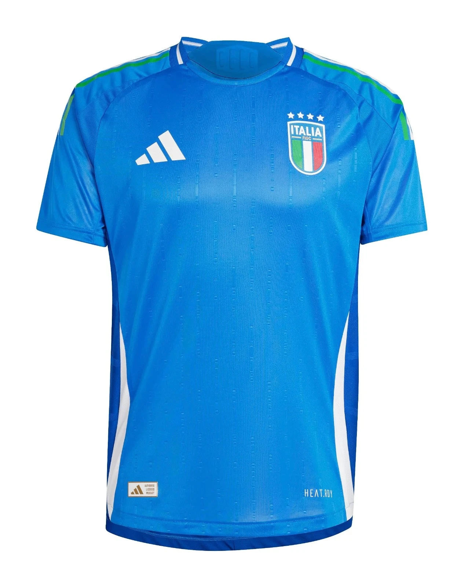
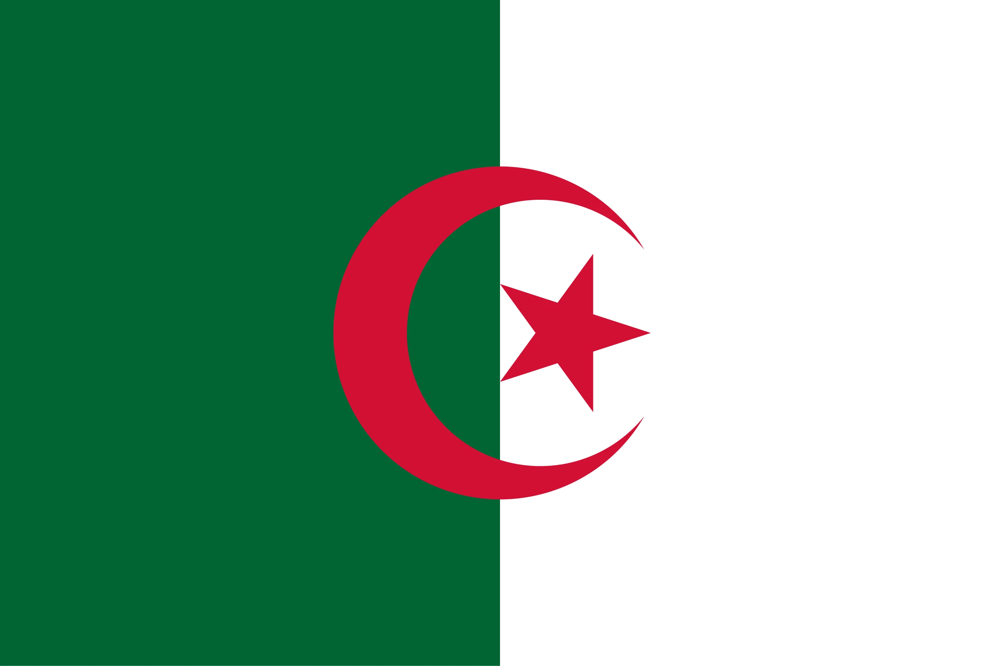

1. Rossi’s Redemption Final
Okay, imagine this—it’s July 11, 1982, Santiago Bernabéu in Madrid, 90,000 fans jammed in, sweating it out for Italy vs. West Germany. Paolo Rossi’s the guy nobody saw coming—two years earlier, he’s banned, caught up in some dodgy betting mess, a total outcast. Now? He’s Italy’s last shot. First half’s a slog—nil-nil—West Germany’s Karl-Heinz Rummenigge’s hobbling around, Italy just grinding it out. Then, 57th minute hits—Claudio Gentile floats this perfect cross, and Rossi, 25, sneaks in like a ghost, nods it past Harald Schumacher—boom, 1-0. The place loses it—Italy’s got the scent now.
Fast forward a bit—69th minute, Marco Tardelli smashes one in—2-0—and he’s off screaming like a madman. By 81st, Alessandro Altobelli’s piling on—3-0—and West Germany’s just shell-shocked. Paul Breitner nicks a late one—3-1—but it’s done. Dino Zoff, 40 years old, oldest captain to ever lift that cup, holds it high—Italy’s third title since ’38. Rossi’s tally? Six goals—Golden Boot, Golden Ball—guy went from zero to hero. “I was dead back in ’81,” he said once; now he’s got 90,000 chanting his name. Rummenigge’s fuming post-game—“He’s a killer”—while Bearzot, Italy’s gaffer, just grins—“Paolo’s my roll of the dice.”
West Germany came in cocky—Euro ’80 champs, big names like Rummenigge and Pierre Littbarski—but Italy’s steel shut them down. Rossi’s header wasn’t some flashy showpiece—just cold, hard poaching. You see those old clips—Zoff clawing shots away, Rossi darting in—and it’s a proper redemption story, grainy and glorious. Bearzot stuck by him when everyone else wrote him off—“He’ll deliver,” he’d said—and damn, did he. West Germany had the ball more—52%—but Italy had Rossi. “He’s the difference,” Uli Stielike grumbled as the whistle blew. Still gives you chills—Rossi rising from the ashes, Italy’s crown shining in Madrid.
2. Brazil’s Samba Slaughter
Let’s set the scene—July 5, 1982, Estadio Sarriá in Barcelona, 44,000 squeezed in tight, Brazil vs. Italy, second round. Brazil’s rolling out the samba kings—Sócrates, Zico, Éder, Falcão—looking like they’re about to dance all over this thing. Five minutes in, though—wham—Paolo Rossi slips through, 1-0 Italy. No sweat, right? Seven minutes later, Sócrates glides past Dino Zoff—1-1—like it’s nothing. Game’s on fire now—Brazil’s weaving magic, Italy’s hanging on.
Then it flips—25th minute, Falcão unleashes this filthy volley—2-2—after Rossi nabbed another off Cerezo’s brain fade—2-1. Brazil’s buzzing—Zico’s darting, Éder’s flicking, it’s pure poetry. But Rossi? He’s a predator—74th minute, he’s there again, slots it past Waldir Peres—3-2. Brazil throw everything—19 shots, 64% possession—Zico’s denied late, Zoff’s a brick wall. Whistle goes—Italy hold on—Brazil’s done, out, gone. Sarriá’s stunned silent, samba snuffed out.
Telê Santana’s just standing there after—“It’s football,” he says, like he’s trying to convince himself. Sócrates lights up a smoke, Zico’s staring at the grass—“We lost ourselves,” he mumbles. Rossi’s hat-trick—first since ’70—carved them up. You watch those clips—Falcão’s rocket, Rossi’s sneaky finishes—it’s beauty and pain in one. “They’re the best team never to win,” Maradona reckoned later; Bearzot’s all—“We took our shots.” Brazil racked up 15 goals in five games, but this tiny pitch became their tomb—Italy sneak off to the semis.

3. Tardelli’s Scream
Back to that final—July 11, Bernabéu, Italy vs. West Germany. Rossi’s got them 1-0, 57th minute, and the crowd’s buzzing—90,000 strong. Then 69th minute rolls around—Marco Tardelli, 27, Juventus workhorse, sees his moment. Giuseppe Bergomi flicks it his way—Tardelli charges, 15 yards out, bangs it low—Harald Schumacher’s diving but it’s past him—2-0. And then—holy hell—he’s off, sprinting, fists pumping, letting out this scream that rips through Madrid like a thunderclap.
The lads pile on—Rossi, Gentile—it’s chaos, Italy’s lead locked in. Altobelli adds a third at 81st—3-0—Breitner’s late one makes it 3-1, but who cares? Tardelli’s moment’s the one—clips of that run, that yell, they’re everywhere. “I lost myself,” he laughed later; Bearzot’s all—“That’s our soul right there.” Schumacher’s sprawled, West Germany’s fading—Rummenigge’s muttering—“Too loud.” Italy’s got it now—third goal’s just gravy—this scream’s the real deal.
West Germany had been pushing—Matthäus, Magath sniffing around—but Italy’s wall wouldn’t budge. Tardelli’s shot? No frills, just instinct—bang, game over. “He’s eternal,” Pelé reckoned; fans still do it—arms out, shouting hoarse—1982’s heartbeat. You catch those replays—Bergomi’s flick, Tardelli’s dash—it’s electric, 90,000 felt it live. “Pure joy,” he said; Altobelli’s like—“He’s our lion.” That roar—West Germany’s cooked—Italy’s crown lands in Madrid.

4. Algeria’s Shock Over West Germany
Alright, June 16, 1982—Gijón, El Molinón, 42,000 buzzing—West Germany stroll in, Euro ’80 champs, FIFA’s 2nd, all swagger. Algeria? 109th, Africa’s long shots—nobody’s betting on them. Fifty-four minutes gone—Rabah Madjer grabs a loose ball, shrugs off a tackle, cool as you like—slots it past Schumacher—1-0. Gijón’s flipping out—West Germany’s rattled. Thirteen minutes later, Lakhdar Belloumi’s in—2-0—Rummenigge claws one back, 2-1, but Algeria dig in—hold tight.
Whistle blows—madness—Algeria’s green’s everywhere, fans losing it. “For Africa,” Madjer’s shouting, thumping his chest; Rachid Mekhloufi, their coach, is tearing up—“We believed.” You see those clips—Madjer’s chill finish, Belloumi’s quick feet—West Germany’s giants are wobbling. “They outran us,” Matthäus spat; Schumacher’s fuming—“Shame.” First African team to down Europe—huge, right? But wait—June 25, “Disgrace of Gijón”—West Germany and Austria cook up a 1-0 snooze-fest, Algeria’s out anyway.
“We were robbed,” Belloumi growled—42,000 booed that sham. “They’re warriors,” Pelé said; Mekhloufi’s crew had two wins—deserved better. Those replays—Schumacher flapping, Madjer’s poise—it’s 1982’s upset gold. West Germany stumble, then win it all—Algeria’s moment gets snatched. “They’re the real story,” Zico reckoned; Rummenigge’s all—“Football’s cruel.” Gijón’s roar lives on—Africa’s pride, short and sweet.
5. Schumacher’s Foul on Battiston
Seville, July 8, 1982—Sánchez Pizjuán’s roasting, 70,000 packed in—West Germany vs. France, semi-final. It’s 1-1—Littbarski, Platini swapping goals—game’s simmering. Fifty-seven minutes—Michel Platini lofts this peach of a ball—Patrick Battiston, 25, bolts through, one-on-one. Harald Schumacher, 28, West Germany’s keeper, comes flying out—bam—slams into Battiston, teeth everywhere, skull cracked, out cold. Ref? Nothing—no whistle—70,000 explode, screaming bloody murder.
Battiston’s stretchered off—France’s bench is losing it—Marius Trésor’s yelling “Criminal!” Schumacher? Just dusts himself off—“He’s fine,” he says later, smirking. Game grinds on—3-3 after extra time—Hrubesch, Fischer for Germany; Giresse, Amoros for France. Pens—Schumacher saves two—5-4 West Germany—they’re through. France collapse—Battiston’s gone, two teeth missing, three cracked. Clips hit screens—Battiston down, Schumacher shrugging—1982’s nasty side shows up.
“He should’ve been off,” Platini fumed; Germany’s Jupp Derwall’s all—“Accident.” French papers went nuts—“Assassin!”—70,000 booed Schumacher off. “We lost more than a game,” Giresse said; West Germany’s win stinks—they’re off to Madrid. You watch it back—Platini’s pass, perfect; Schumacher’s leap, brutal—“He’s a thug,” Pelé snapped. Fischer’s overhead tied it—3-3—but Battiston’s fall’s what sticks. “I didn’t see him,” Schumacher bullshitted—France’s dream’s dust, justice nowhere.

6. Zico’s Free-Kick Masterpiece
June 18, 1982—Benito Villamarín, Seville, 43,000 buzzing—Brazil vs. Scotland, group stage. Scotland catch Brazil napping—12th minute, David Narey bangs one in—1-0—crowd’s stunned. Then Zico, 29, steps up—33rd minute—free-kick, 25 yards out. Wall’s up, Alan Rough’s twitching—Zico curls it, dips it, swerves—top corner—2-1. Brazil’s awake now—Éder chips one—3-1; Oscar heads—4-1; Falcão smashes—4-1. Samba’s rolling, Scotland’s toast.
Rough’s flat out—43,000 swaying to Brazil’s beat. “I saw the gap,” Zico smirked; Telê Santana’s clapping—“Our maestro.” You catch those clips—ball bending, Rough grasping—it’s 1982’s flair kicking off. “He’s magic,” Graeme Souness grunted; Scotland’s Robertson’s fading—Brazil’s 15 goals in five games start here. “We danced,” Éder chuckled—group’s theirs, five wins coming. Zico’s got three total—this one’s the gem.
“He’s a genius,” Pelé said; Rough’s like—“Unstoppable.” Scotland pushed—Strachan, Miller scrapping—but Brazil drown them in flair. “He’s our heart,” Falcão grinned; Santana’s 4-2-2-2’s clicking—Seville’s hooked. That curl—replayed a million times—sets Brazil’s tone, doomed or not. “For the fans,” Zico said; 1-0’s flipped in 21 minutes—Scotland’s just the first domino.